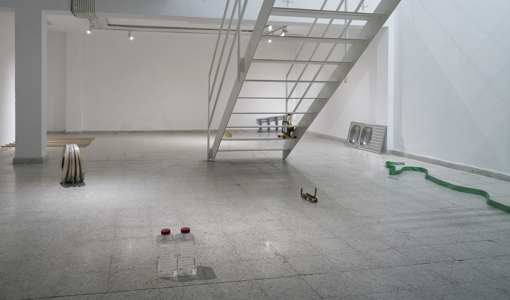

Provisional Readymades
2019
Provisional Readymades operationalizes the time-bound form of the exhibition in order to temporarily introduce goods from Turkish-occupied northern Cyprus into the sovereign Republic of Cyprus. Following the procedures enumerated in European Council Regulation No. 866/2004, which establishes special rules for those areas of Cyprus “temporarily outside the area of freedom, justice and security," the goods were accompanied by an exhibition catalogue “providing reasonable evidence” of their intended exhibition.
This documentation comprises an exhibition catalogue in which each object is illustrated, inventoried, and described according to the standards typically afforded works of art in the contemporary art market.
After their mandatory exhibition period at the NeMe Arts Centre in Limassol (Republic of Cyprus), the objects were placed on long-term loan to S.N.K. Venus Home Developers Ltd (liquidated 2011) in Pyla, a bicommunal village located within the United Nations Buffer Zone in Cyprus.


